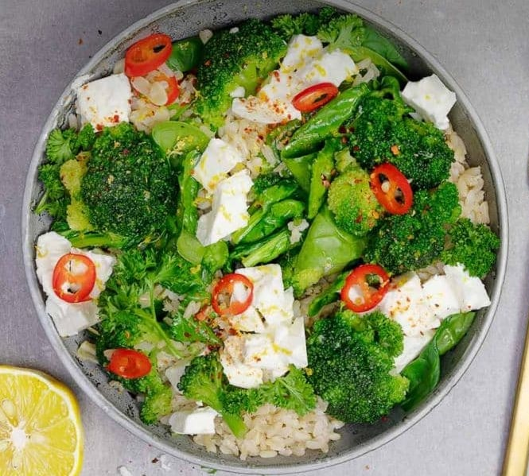

Feta-Broccoli Salad

Description
Fresh delicious salad, which you can enjoy cold or warm
Incredients for 1 Portion
70 g. braun rice
200 g. Broccoli
40 g. Baby Spinach
1/2 tea spoon of Olive oil
50 g. Feta cheese
Steps
Cook rice
give some Olive oil to the pan, also add broccoli and spinach, season wiht salt, pepper and chilli if you want
mix the seard vegetables with cooked rice
garnish with feta cheese
go back